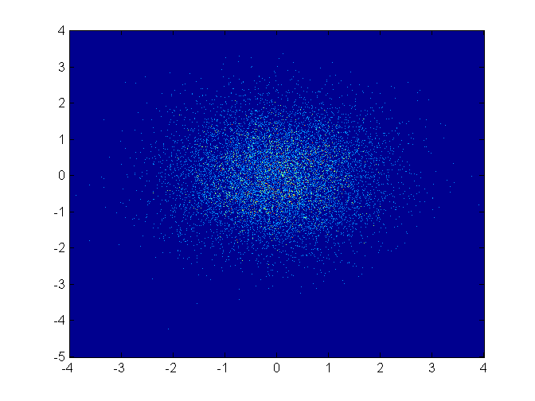
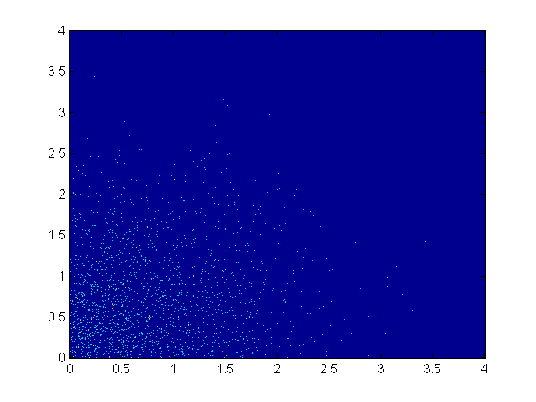
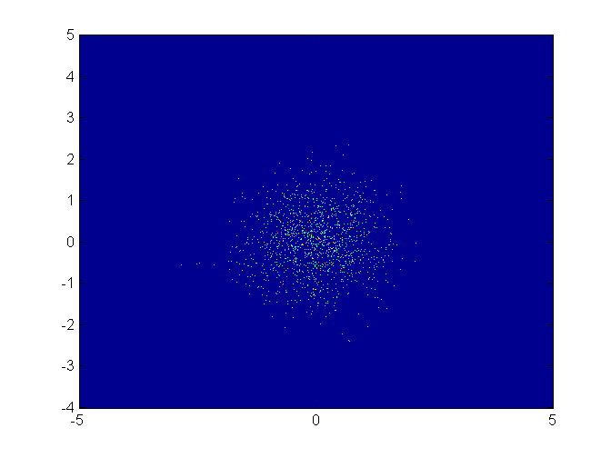
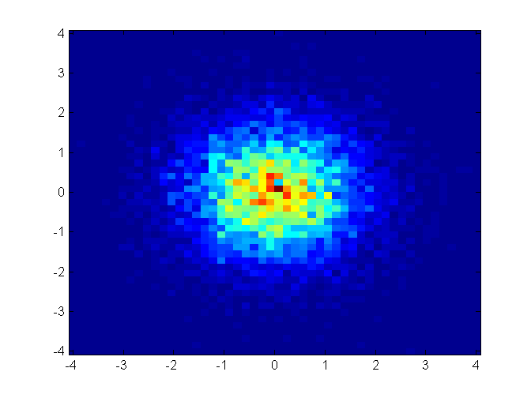
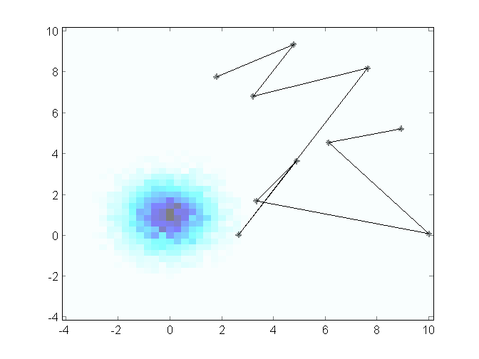
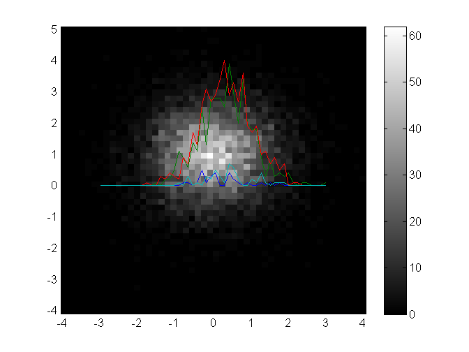

Contents
Default cloud plot
cloudPlot( randn(10000,1), randn(10000,1));
Only show the upper right hand quadrant
cloudPlot( randn(10000,1), randn(10000,1), [0 4 0 4] );
Use logarithmic scale
cloudPlot( randn(10000,1), randn(10000,1), [], true);
Use only a few bins
cloudPlot( randn(10000,1), randn(10000,1), [], [], [50 50] );
Use transluscent images and name-value pair arguments
plot ( 10*rand(10,1), 10*rand(10,1), 'k*-' ); hold on; cloudPlot( randn(10000,1), randn(10000,1)+1, [], [], [50 50], 'AlphaData', 0.5 ); hold off; colormap(1-hot);
Plot a curve of the raw data on top, using colorbar and colormap
[h,canvas] = cloudPlot( randn(10000,1), randn(10000,1)+1, [], [], [50 50] ); hold on; colorbar; colormap( get(h,'Parent'), gray(256) ); plot ( linspace(-3,3,50), canvas([10 20 30 40],:)/10 ); hold off;
Use lots-and-lots of bins
Having bins smaller than one pixel on the screen is strongly advized against because then data will randomly not be shown.
X = randn(1000000,1); Y = randn(1000000,1); colormap(jet); subplot ( 2, 2, 1 ); cloudPlot( X, Y ); title ( 'Bins exactly one pixel large' ); subplot ( 2, 2, 2 ); cloudPlot( X, Y, [], [], [100 100] ); title ( 'Bins larger than one pixel' ); subplot ( 2, 2, 3 ); cloudPlot( X, Y, [], [], [1000 1000] ); title ( 'Bins smaller than one pixel' );
Warning: Having bins smaller than one pixel on the screen is not advised